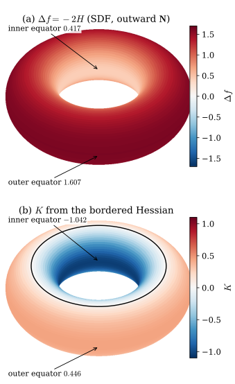
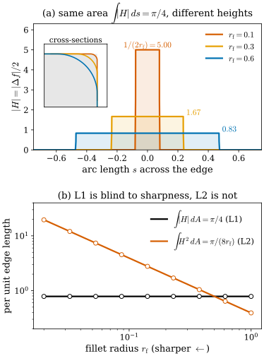
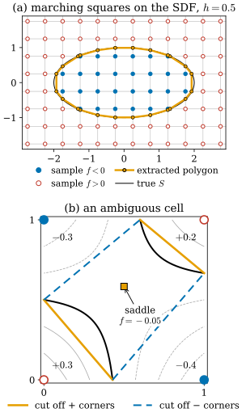

30.2 Curvature of Implicit Surfaces
Goals
- implicit surface \(f = 0\)의 shape operator를 \(f\)의 Hessian matrix로 쓰고, SDF이면 Hessian의 eigenvalue가 \(0\)과 \(-\kappa_1, -\kappa_2\)라는 것을 이 study set의 부호로 설명할 수 있다.
- \(\divg(\grad f/\abs{\grad f}) = -2H\)와 SDF의 \(\Delta f = -2H\)를 유도하고, Gaussian curvature를 bordered Hessian으로 계산할 수 있다.
- Neuralangelo의 curvature loss가 기하적으로 무엇을 벌하는지(\(\abs{H}\)의 총량, 평평함이 아님), 그리고 L1이라서 생기는 성질을 말할 수 있다.
- marching cubes가 zero level set을 mesh로 바꾸는 방법과 모호한 경우가 생기는 이유를 설명할 수 있다.
Prerequisites
- Section 30.1: \(\mathbf{N} = \grad f/\abs{\grad f}\)(Proposition 30.1.1), SDF와 \(\abs{\grad f} = 1\)(Proposition 30.1.5), medial axis(Figure 30.1.2)
- Section 0.4: shape operator \(W_p = -d\mathbf{N}_p\)(Definition 0.4.1), principal curvature, \(K\)와 \(H\)(Definition 0.4.5), running example의 값(Example 0.4.6), \(\Delta_S\mathbf{x} = 2H\mathbf{N}\) (0.4.3)
- Section 29.1: 납작한 Gaussian의 가장 짧은 축 \(r_3\)
- linear algebra: symmetric matrix의 eigenvalue, trace와 determinant, adjugate matrix(\(A\,\mathrm{adj}(A) = \det(A)\,I\))
Motivation
Section 30.1에서 implicit surface \(S = f^{-1}(0)\)의 normal은 \(\mathbf{N} = \grad f/\abs{\grad f}\)였다. \(f\)를 한 번 미분하면 normal이 나왔다. Tour Section 0.4에서 curvature는 normal이 기우는 빠르기였으므로, \(f\)를 두 번 미분하면 curvature가 나와야 한다. 이 절은 그 계산을 한다.
계산이 필요한 이유는 실무에 있다. Neuralangelo [Li23]는 SDF의 Laplacian \(\Delta f\)의 절댓값을 loss에 더하고 이것을 “mean curvature를 regularize한다”고 설명한다. 그 말이 정확히 무엇을 뜻하는지, 부호와 상수배까지 포함해 말하려면 \(\Delta f\)와 \(H\)의 관계가 필요하다. 이 절은 세 질문에 답한다.
- shape operator, principal curvature, \(H\), \(K\)를 \(f\)의 미분으로 어떻게 쓰는가? SDF이면 무엇이 단순해지는가?
- curvature loss \(\mathbb{E}\abs{\Delta f}\)는 어떤 모양을 벌하고 어떤 모양을 벌하지 않는가?
- zero level set에서 mesh를 꺼내는 marching cubes는 무엇을 근사하고, 어디서 모호해지는가?
부호는 Section 30.1의 Conventions대로다. 밖에서 \(f \gt 0\)이므로 \(\mathbf{N} = \grad f/\abs{\grad f}\)는 바깥쪽이고, \(W_p = -d\mathbf{N}_p\), \(H = \tfrac12\tr W_p\)이다. 이 부호에서 반지름 \(r\)인 sphere는 \(\kappa_1 = \kappa_2 = -1/r\), \(H = -1/r\)이다(Example 0.4.6).
The Shape Operator from the Hessian
\(\mathbf{N} = \grad f/\abs{\grad f}\)는 \(S\) 위에서만이 아니라 \(\grad f \neq 0\)인 공간 전체에서 정의된 vector field다. 그래서 \(S\) 위의 곡선을 따라 미분하는 대신 공간에서 Jacobian matrix \(D\mathbf{N}\)을 구하고 tangent vector에 적용하면 된다. \(f\)의 Hessian matrix(헤세 행렬) \(\Hess f = (\partial_i\partial_j f)\)와 \(T_pS\)로의 orthogonal projection \(P = I_3 - \mathbf{N}\mathbf{N}^{\mathsf T}\)를 쓴다.
Proposition 30.2.1 (shape operator of an implicit surface). \(0\)이 smooth function \(f\)의 regular value이고 \(S = f^{-1}(0)\), \(\mathbf{N} = \grad f/\abs{\grad f}\)라 하자. \(p \in S\), \(w \in T_pS\)이면
이다. 곧 shape operator는 Hessian matrix를 tangent plane에 제한하고 \(-\abs{\grad f}\)로 나눈 것이다. \(P\,\Hess f\,P\)는 symmetric이므로 \(W_p\)는 self-adjoint이다.
Derivation. \(g = \abs{\grad f}\)라 하자. \(\grad g = \Hess f\,\grad f/g\)이므로 product rule로
\[ \begin{aligned} D\mathbf{N} = D\Big(\frac{\grad f}{g}\Big) &= \frac{\Hess f}{g} - \frac{\grad f\,(\Hess f\,\grad f)^{\mathsf T}}{g^3} \\ &= \frac{1}{g}\big(I_3 - \mathbf{N}\mathbf{N}^{\mathsf T}\big)\Hess f \end{aligned} \]
이다(\(\Hess f\)는 symmetric). \(S\) 위의 곡선 \(\alpha\)가 \(\alpha(0) = p\), \(\alpha'(0) = w\)이면 chain rule로 \(\frac{d}{dt}\mathbf{N}(\alpha(t))|_{t=0} = D\mathbf{N}(p)\,w\)이고, 이것이 Definition 0.4.1의 \(d\mathbf{N}_p(w)\)다. 앞의 \(P\) 덕분에 결과는 \(T_pS\) 안에 있다.
Example 30.2.2 (sphere, two ways). \(f_1 = \abs{x}^2 - r^2\)이면 \(\Hess f_1 = 2I_3\), \(\abs{\grad f_1} = 2r\)이므로 (30.2.1)에서 \(d\mathbf{N}_p = \tfrac{1}{2r}P(2I_3) = \tfrac1r P\), 곧 \(T_pS\) 위에서 \(\tfrac1r\,\id\)이다. \(f_2 = \abs{x} - r\)이면 \(\Hess f_2 = (I_3 - \hat x\hat x^{\mathsf T})/\abs{x}\) (\(\hat x = x/\abs{x}\))이고 \(\abs{\grad f_2} = 1\)이므로, \(S\) 위에서 다시 \(d\mathbf{N}_p = \tfrac1r P\)이다. 어느 쪽이든 \(W_p = -\tfrac1r\,\id\), \(\kappa_1 = \kappa_2 = -1/r\), \(H = -1/r\), \(K = 1/r^2\)로 Tour의 Example 0.4.2와 같다. \(f\)를 바꾸면 \(\Hess f\)도 \(\abs{\grad f}\)도 바뀌지만, (30.2.1)의 비는 바뀌지 않는다.
Verification: verify/v-30-2-implicit-curvature.py
The Hessian of an SDF
SDF에서는 (30.2.1)이 더 단순해진다. \(\abs{\grad f}^2 = 1\)을 미분하면 \(2\,\Hess f\,\grad f = 0\)이다. 곧 \(\mathbf{N} = \grad f\)는 eigenvalue \(0\)인 eigenvector이고, symmetric matrix \(\Hess f\)는 \(\mathbf{N}\)에 수직인 평면 \(T_pS\)를 자기 자신으로 보낸다. 그러면 \(P\,\Hess f = \Hess f\)이다.
Proposition 30.2.3 (Hessian of a signed distance function). \(f\)가 \(S\)의 SDF이고 \(p\) 근처에서 smooth하다고 하자. 그러면
이다. 따라서 \(\Hess f(p)\)의 eigenvalue는 \(0\)(eigenvector \(\mathbf{N}\))과 \(-\kappa_1, -\kappa_2\)(eigenvector는 principal direction)이다. 더 나아가 \(p\)에서 normal 방향으로 \(t\)만큼 떨어진 점 \(x = p + t\mathbf{N}(p)\)에서 \(\Hess f(x)\)는 level set \(\{f = t\}\)의 Hessian이고, 그 eigenvalue는
이다. \(1 - t\kappa_i = 0\)인 점, 곧 center of curvature에서 eigenvalue가 발산한다.
둘째 부분을 그림으로 보자. SDF의 level set \(\{f = t\}\)는 \(S\)를 normal 방향으로 \(t\)만큼 민 offset surface다. 반지름 \(r\)인 sphere의 offset은 반지름 \(r + t\)인 sphere이고 principal curvature는 \(-1/(r + t)\)이다. (30.2.3)에 \(\kappa = -1/r\)을 넣으면 정확히 \(1/(r + t)\)가 나온다(Exercise 30.2.4). 일반 surface에서도 principal direction마다 이 계산을 하면 된다.
![위아래 두 그래프. (a) 가로축 signed distance t(-0.9부터 1.5), 세로축 Hess f의 eigenvalue. t < 0 부분이 하늘색(inside)이다. 파란 곡선 1/(r+t)는 왼쪽으로 갈수록 가파르게 커지고, 초록 곡선 1/(R+r+t)는 0.3 근처에서 완만하며, 주홍 직선은 0이다. 흰 원 점들(finite differences)이 세 곡선 위에 놓여 있다. t = 0에 검은 세로선 S, t = -0.8에 주황 점선 core circle (medial axis)가 있다. (b) 가로축 meridian angle u(0부터 2π), 세로축 S 위의 eigenvalue. 파란 수평선 1/r = 1.25, 주홍 수평선 0, 초록 곡선 cos u/(R + r cos u)가 u = 0에서 0.36, u = π에서 -0.83이고, π/2와 3π/2 사이(분홍 띠, inner half)에서 음수다. 사각형 점(parametrization에서 구한 -κ1, -κ2)이 곡선 위에 놓여 있다.](figures/fig-30-2-1-sdf-hessian.svg)
Figure 30.2.1의 (a)부터 보자. 가로축의 \(t\)는 바깥쪽 적도에서 normal 방향으로 잰 거리이고, 각 \(t\)에서 세 eigenvalue를 그렸다. 주홍 직선이 언제나 \(0\)인 것은 SDF가 normal 방향으로 기울기 1로 정확히 직선이기 때문이다. 나머지 둘은 그 점을 지나는 level set(offset torus)이 두 방향으로 휘는 정도다. 왼쪽, 곧 물체 안으로 들어가면 meridian 방향(파랑)이 급히 커진다. 관의 cross-section 원이 반지름 \(r + t\)로 작아지기 때문이고, \(t = -r\)에서 반지름이 \(0\)이 되어 발산한다. 이 점이 관의 중심원, 곧 이 torus의 medial axis다. Figure 30.1.2에서 ellipse의 medial axis가 vertex의 center of curvature에서 끝났던 것과 같은 현상이다. (b)는 \(t = 0\), 곧 \(S\) 위만 본 것이다. 사각형으로 찍은 parametrization의 값과 Hessian의 eigenvalue가 겹치므로 (30.2.2)가 확인된다. 바깥쪽 절반에서는 두 eigenvalue가 모두 양수이고(두 principal curvature가 모두 음수인 elliptic point), 안쪽 절반에서는 초록이 음수가 되어 hyperbolic point가 된다.
Mean Curvature Is a Divergence
(30.2.1)의 trace를 취하면 mean curvature가 나온다. 여기서 놀라운 점은 결과가 공간의 vector field \(\mathbf{N}\)의 divergence라는 것이다.
Proposition 30.2.4 (mean curvature of an implicit surface). Proposition 30.2.1의 상황에서 \(S\) 위의 각 점에서
이다(\(\mathbf{N} = \grad f/\abs{\grad f}\)를 \(\grad f \neq 0\)인 공간 전체의 vector field로 보고, \(H\)는 이 \(\mathbf{N}\)에 대한 값). 특히 \(f\)가 SDF이면
이고, \(S\) 밖의 점 \(x\)에서는 \(\Delta f(x)\)가 \(x\)를 지나는 level set의 \(-2H\)다.
Derivation. \(\divg\mathbf{N} = \tr D\mathbf{N}\)이다. \(T_pS\)의 orthonormal basis \(e_1, e_2\)와 \(\mathbf{N}\)으로 trace를 계산하면
\[ \tr D\mathbf{N} = \inner{D\mathbf{N}\,e_1}{e_1} + \inner{D\mathbf{N}\,e_2}{e_2} + \inner{D\mathbf{N}\,\mathbf{N}}{\mathbf{N}} \]
이다. 앞의 두 항은 \(\tr d\mathbf{N}_p = -\tr W_p = -2H\)이고, 마지막 항은 \(D\mathbf{N} = \tfrac1g P\,\Hess f\)이고 \(\mathbf{N}^{\mathsf T}P = 0\)이므로 \(0\)이다. 둘째 식은 \(-2H = \tr D\mathbf{N} = \tr(P\,\Hess f)/g = (\Delta f - \mathbf{N}^{\mathsf T}\Hess f\,\mathbf{N})/g\)를 정리한 것이다. SDF이면 \(g = 1\)이고 \(\Hess f\,\mathbf{N} = 0\)이므로 \(\divg\mathbf{N} = \divg\grad f = \Delta f\)이다.
Example 30.2.5 (running examples from implicit functions).
- sphere. \(\Delta(\abs{x} - r) = 2/\abs{x}\)이므로 \(S\)에서 \(-2H = 2/r\), 곧 \(H = -1/r\)이다. \(S\) 밖에서는 \(2/\abs{x}\)가 반지름 \(\abs{x}\)인 level set의 \(-2H\)이고, 중심(medial axis)에서 발산한다.
- cylinder. \(f = \sqrt{x^2 + y^2} - r\)이면 \(\Delta f = 1/\sqrt{x^2 + y^2}\)이므로 \(S\)에서 \(H = -1/(2r)\)다(Exercise 30.2.1).
- torus of revolution. \(\rho = \sqrt{x^2 + y^2}\)(\(z\)축까지의 거리)로 쓴 다항식 \(f = (\rho - R)^2 + z^2 - r^2\)(Example 6.5.8, SDF가 아님)에 (30.2.4)를 쓰면 \(H = -\dfrac{R + 2r\cos u}{2r(R + r\cos u)}\)이다. \(\grad f\)는 바깥쪽이므로 이것은 Tour Example 0.4.6에서 안쪽 \(\mathbf{N}\)으로 구한 \(H\)와 부호만 반대다. SDF \(\sqrt{(\rho - R)^2 + z^2} - r\)을 쓰면 \(\Delta f = (R + 2r\cos u)/(r(R + r\cos u))\)이고, \(R = 2\), \(r = 0.8\)에서 안쪽 적도의 \(0.417\)부터 바깥쪽 적도의 \(1.607\)까지 언제나 양수다.
Verification: verify/v-30-2-implicit-curvature.py
Gaussian Curvature: the Bordered Hessian
\(K = \det W_p\)도 \(f\)의 미분으로 쓸 수 있다. \(W_p\)는 \(T_pS\) 위의 map이므로 \(3 \times 3\) 행렬의 determinant를 그대로 쓸 수는 없고, \(\grad f\)로 “테두리를 두른” \(4 \times 4\) 행렬을 쓴다.
Proposition 30.2.6 (Gaussian curvature of an implicit surface). Proposition 30.2.1의 상황에서
이다(\(\mathrm{adj}\)는 adjugate matrix). \(K\)는 \(\mathbf{N}\)의 방향에 무관하므로 \(f\)를 \(-f\)로 바꿔도 변하지 않는다. 특히 SDF이면 \(\Hess f\)의 eigenvalue가 \(0, -\kappa_1, -\kappa_2\)이므로
(eigenvalue 둘씩 곱한 것의 합)이다.
Derivation. 좌표를 돌려 \(\mathbf{N} = e_3\)이 되게 하면 \(\grad f = g\,e_3\)이고 \(\Hess f = \begin{pmatrix} A & b \\ b^{\mathsf T} & c \end{pmatrix}\)(\(A\)는 \(T_pS\) 위의 \(2 \times 2\) 블록)이다. (30.2.1)에서 \(W_p = -A/g\)이므로 \(K = \det A/g^2\)이다. bordered matrix의 마지막 행에는 \(g\) 하나만 있으므로 그 행으로 전개하면 \(\det = -g^2\det A\)이고, 따라서 첫째 식이 \(\det A/g^2\)를 준다. \(\mathrm{adj}(\Hess f)\)의 \((3,3)\) 성분은 \(\det A\)이므로 둘째 식도 \(g^2\det A/g^4\)다. 회전은 두 식을 바꾸지 않는다.
implicit curve와 surface의 curvature 공식(Gaussian, mean, principal curvature)은 [Goldman05]에 여러 형태로 모여 있다. 부호 규약은 문헌마다 다르므로 여기서는 이 study set의 부호로 직접 유도하고 sphere, cylinder, torus of revolution, saddle surface에서 sympy로 확인한 식을 썼다.

Figure 30.2.2의 두 torus를 위아래로 비교해 보자. (a)는 한 가지 색(빨강)의 농담만 있다. 아래쪽 화살표가 가리키는 바깥쪽 둘레가 진하고, 위쪽 화살표가 가리키는 구멍 너머의 안쪽 벽으로 갈수록 옅어지지만 흰색(\(0\))이나 파랑까지 가지는 않는다. 바깥쪽 \(\mathbf{N}\)에 대해 \(H\)가 어디서나 음수라는 뜻이다. (b)는 구멍 쪽 절반이 파랑으로 바뀐다. 거기서는 meridian 방향과 parallel 방향이 반대로 휘어 \(K \lt 0\)이다. 이 두 그림의 차이가 다음 소절의 요점이다. mean curvature만 보는 loss는 (b)의 파란 영역 같은 saddle 모양을 따로 구별하지 않는다.
What a Curvature Loss Penalizes
Neuralangelo [Li23]는 eikonal loss((30.1.4))와 함께 다음 curvature loss를 쓴다. 논문은 이것을 “SDF의 mean curvature를 regularize한다”고 설명한다.
공식 코드에서 확인한 구현은 다음과 같다. \(x_i\)는 rendering에 쓰는 sample 전체, 곧 각 ray가 단위 bounding sphere 안을 지나는 구간에서 뽑은 점들이다(sphere와 만나지 않는 ray는 뺀다). \(\Delta f\)는 자동미분이 아니라 finite difference로 계산한다. 논문은 trilinear 보간을 쓰는 hash encoding의 해석적 2차 도함수가 \(0\)이 된다는 것을 이유로 든다(정확히는 trilinear 보간이 각 좌표에 대해 1차식이라 encoding의 \(\partial^2/\partial x_i^2\)가 grid cell 안에서 \(0\)이다). 기본 설정은 정사면체의 네 vertex 방향으로 떨어진 네 점을 쓰는 “4 taps”이고, 간격은 현재 활성화된 가장 고운 hash grid 해상도의 역수다. loss weight는 \(5 \times 10^{-4}\)이고, 처음 5000 iteration 동안 \(0\)에서 linear하게 키운 뒤 고운 해상도가 켜질 때마다 줄인다. 논문은 처음부터 이 loss를 강하게 걸면 sphere로 초기화한 SDF에서 오목한 모양이 생기기 어렵다고 적는데, 그래서 이 warmup을 둔다.
Proposition 30.2.4로 이 식을 읽을 수 있다. \(f\)가 SDF에 가깝다면 \(\abs{\Delta f(x_i)}\)는 \(x_i\)를 지나는 level set의 \(2\abs{H}\)다. \(S\) 위의 sample에서는 surface 자신의 \(2\abs{H}\)이고, \(S\)에서 떨어진 sample에서는 offset surface의 \(2\abs{H}\)다. 후자는 (30.2.3)대로 center of curvature 근처에서 발산하므로, 이 loss는 surface 안쪽에서 medial axis가 sample 근처로 다가오는 것, 곧 얇은 부분이나 새 구멍이 생기는 것도 벌한다(해석이다. 논문의 “curvature의 singularity를 막아 topology를 보존한다”는 설명과 같은 방향이다).

Figure 30.2.3의 (a)를 보자. 세 cross-section은 평평한 두 면과 원호로 이루어지므로 \(\abs{H}\)는 원호 위에서만 \(1/(2r_{\mathrm f})\)이고 나머지에서 \(0\)이다. 날카로운 모서리(주홍)는 높고 좁은 상자, 둥근 모서리(파랑)는 낮고 넓은 상자인데 넓이는 셋 다 \(\pi/4\)다. 원호의 arc length \(\pi r_{\mathrm f}/2\)와 높이 \(1/(2r_{\mathrm f})\)의 곱에서 \(r_{\mathrm f}\)가 약분되기 때문이다. (b)는 이것을 \(r_{\mathrm f}\)를 바꿔 가며 잰 것이다. 검은 선은 수평이고 주홍 선은 왼쪽으로 갈수록 올라간다. L1으로 재면 모서리 하나의 비용은 꺾인 각과 모서리 길이로만 정해진다. L2로 재면 날카로울수록 비용이 끝없이 커진다.
From Level Set to Mesh: Marching Cubes
학습된 SDF에서 mesh를 얻는 표준 방법은 marching cubes [Lorensen87]다. \(f\)를 간격 \(h\)인 grid의 점에서 계산하고, cube 하나씩 다음을 한다. 양 끝 값의 부호가 다른 edge마다 그 위에 vertex를 하나 둔다. 위치는 \(f\)가 edge 위에서 linear하다고 보고
로 정한다(\(f_0 = f(x_0)\), \(f_1 = f(x_1)\)). 그리고 cube의 corner 여덟 개의 부호 배치(\(2^8 = 256\)가지)마다 미리 만들어 둔 표에 따라 이 vertex들을 triangle로 잇는다. 2차원 cross-section에서는 square의 네 corner(\(2^4 = 16\)가지)으로 같은 일을 하는 marching squares가 된다.

0, extracted polygon, true S. (b) 단위 정사각형 한 칸. 왼쪽 아래 +0.3(빨간 빈 원), 오른쪽 아래 -0.4(파란 원), 오른쪽 위 +0.2(빨간 빈 원), 왼쪽 위 -0.3(파란 원). 회색 곡선들은 bilinear 보간의 level set이고, 검은 곡선 두 개(hyperbola의 두 가지)가 zero set으로 왼쪽 아래와 오른쪽 위 모서리를 각각 감싼다. 가운데 약간 위의 주황 사각형에 saddle f = -0.05라는 주석이 있다. 주황 실선 두 개는 두 양수 corner를 잘라내는 연결, 파란 점선 두 개는 두 음수 corner를 잘라내는 연결이다.">Figure 30.2.4의 (a)에서 주황 다각형은 ellipse를 꽤 잘 따라간다. grid가 \(h = 0.5\)로 성긴데도 vertex가 거의 정확한 것은 SDF가 \(S\) 근처에서 거의 linear하기 때문이다(Proposition 30.1.5(b)). 오차는 \(f\)의 2차 항, 곧 curvature에서 오므로 양 끝의 뾰족한 곳에서 가장 크다. (b)는 한 cell에서 생기는 문제다. 대각선의 두 corner가 양수, 다른 두 corner가 음수이면 zero set이 cell을 지나는 방법이 두 가지다. 주황처럼 양수 corner들을 따로 잘라낼 수도 있고, 파랑처럼 음수 corner들을 잘라낼 수도 있다. 회색 level set을 따라가 보면 bilinear 보간 함수는 cell 가운데에 saddle point(주황 사각형)를 가진다. 어느 연결이 맞는지는 그 saddle의 값이 정하고, 여기서는 음수이므로 주황이다.
모호함의 원인은 Section 30.1에서 본 critical point다. 보간 함수의 critical point(saddle)가 zero level 가까이에 있으면 zero set의 연결 방식이 그 값의 부호에 따라 바뀐다. 이것은 Figure 30.1.1(b)에서 \(x^2 - y^2 = c\)의 level set이 \(c\)의 부호에 따라 위아래로 갈라지거나 좌우로 갈라지는 것과 같은 현상이다. 두 surface가 grid 간격보다 가까이 다가간 곳, 얇은 판, 작은 구멍에서 이런 cell이 생긴다. 이웃한 cube가 공유하는 face에서 서로 다른 연결을 고르면 mesh에 구멍이 날 수 있으므로, 실제 구현은 face를 공유하는 cube들이 같은 결정을 내리도록 표를 구성하거나 보간 함수의 값을 보고 고른다.
Two Normals for a Flat Gaussian
Section 29.1은 납작한 Gaussian의 가장 짧은 축 \(r_3\)을 normal로 썼다. 이 절의 관점에서는 다른 후보가 있다. Gaussian의 값 \(G(x)\)도 공간의 함수이므로 level set \(\{G = c\}\)(ellipsoid)의 normal \(\grad G/\abs{\grad G}\)를 쓸 수 있다. \(\grad G = -G\,\Sigma^{-1}(x - \mu)\)이므로 이 normal은 \(\Sigma^{-1}(x - \mu)\)의 반대 방향, 곧 Gaussian의 중심을 향한다.
두 normal은 언제 같은가? \(s = (s_1, s_1, s_3)\)인 납작한 Gaussian의 \(1\sigma\) ellipsoid를 \(x = \mu + s_1\sin\psi\,r_1 + s_3\cos\psi\,r_3\)으로 쓰자(\(\psi = 0\)이 \(r_3\) 쪽 꼭대기, \(\psi = 90^\circ\)가 가장자리). 이 점에서 두 normal 사이의 각 \(\beta\)는 \(\tan\beta = (s_3/s_1)\tan\psi\)를 만족한다(Exercise 30.2.5). \(s_3/s_1\)이 작으면 \(\psi\)가 \(90^\circ\)에 아주 가까운 가장자리의 좁은 띠를 빼고는 \(\beta\)가 작다. 곧 납작한 Gaussian에서 \(r_3\)은 level set normal의 “대부분의 점에서의 값”이다. 차이도 있다. \(\grad G\)는 부호가 정해져 있고(중심 쪽), 여러 Gaussian을 더한 density \(d = \sum_g \alpha_g G_g\)에 대해서도 그대로 정의된다. SuGaR가 이 density의 level set에서 normal을 \(\grad d/\abs{\grad d}\)로 얻는 것(Section 30.3)이 그 예다.
Summary
- \(\mathbf{N} = \grad f/\abs{\grad f}\)에 대해 \(d\mathbf{N}_p = \tfrac{1}{\abs{\grad f}}P\,\Hess f\)이고 \(W_p = -d\mathbf{N}_p\)다. shape operator는 tangent plane에 제한한 Hessian matrix다.
- SDF이면 \(\Hess f\,\mathbf{N} = 0\)이고 \(\Hess f\)의 eigenvalue는 \(0, -\kappa_1, -\kappa_2\)다. \(S\)에서 \(t\)만큼 떨어진 점에서는 offset surface의 값 \(-\kappa_i/(1 - t\kappa_i)\)이고, center of curvature(medial axis 쪽)에서 발산한다.
- \(\divg(\grad f/\abs{\grad f}) = -2H\)이고 SDF이면 \(\Delta f = -2H\)다. \(K\)는 bordered Hessian으로 계산하고, SDF이면 \(\Hess f\)의 eigenvalue를 둘씩 곱한 합이다.
- Neuralangelo의 \(\mathbb{E}\abs{\Delta f}\)는 sample을 지나는 level set의 \(2\abs{H}\)를 벌한다. surface 위에서는 saddle과 minimal surface의 비용이 \(0\)이고(떨어진 sample에서만 \(\tfrac{\abs{t}}{2}(\kappa_1^2 + \kappa_2^2)\) 정도의 비용이 생긴다), L1이라 모서리의 날카로움 자체는 따로 벌하지 않는다.
- marching cubes는 edge 위에서 \(f\)를 linear로 보고 vertex를 두므로 SDF에서 정확하다. 보간 함수의 saddle이 zero level 가까이 있는 cell에서는 연결 방식이 모호하다.
다음 절에서는 implicit function 대신 surface 조각을 직접 primitive로 쓰는 방법을 본다. 2D Gaussian Splatting의 primitive는 tangent plane 위의 국소 parametrization이고, normal은 \(t_u \times t_v\)로 언제나 정해진다. 그 정규화 항(normal consistency, depth distortion)이 이 장의 기하로 어떻게 읽히는지 본다.
Quick check
Exercise 30.2.1 ★ 반지름 \(r\)인 cylinder의 SDF \(f = \sqrt{x^2 + y^2} - r\)의 Hessian matrix를 \(p = (r, 0, 0)\)에서 구하고, eigenvalue로부터 \(\kappa_1, \kappa_2\), \(H\), \(K\)를 읽어라. Tour의 값과 비교하여라.
Solution
\(\rho = \sqrt{x^2 + y^2}\)이면 \(\grad f = (x/\rho, y/\rho, 0)\)이고 \(\Hess f = \frac{1}{\rho}\begin{pmatrix} 1 - x^2/\rho^2 & -xy/\rho^2 & 0 \\ -xy/\rho^2 & 1 - y^2/\rho^2 & 0 \\ 0 & 0 & 0 \end{pmatrix}\)이다. \(p = (r, 0, 0)\)에서 \(\Hess f = \diag(0, 1/r, 0)\)이다. eigenvalue \(0\)의 eigenvector는 \(e_1 = \mathbf{N}\)(바깥쪽)과 \(e_3\)(축 방향), \(1/r\)의 eigenvector는 \(e_2\)(둘레 방향)이다. (30.2.2)에서 \(-\kappa\)가 \(1/r\)과 \(0\)이므로 \(\kappa_1 = 0\)(축 방향), \(\kappa_2 = -1/r\)(둘레 방향), \(H = -1/(2r)\), \(K = 0\)이다. 바깥쪽 \(\mathbf{N}\)으로 구한 Tour Example 0.4.6의 값과 같다. \(\Delta f = 1/r = -2H\)도 확인된다.
Verification: verify/v-30-2-implicit-curvature.py
Exercise 30.2.2 ★ SDF \(f\) 대신 안에서 양수인 \(\tilde f = -f\)를 쓴다(일부 코드의 “inside out” 설정). \(\mathbf{N}\), \(W_p\), \(\kappa_i\), \(H\), \(K\), \(\Delta f\)는 각각 어떻게 바뀌는가? \(\Delta\tilde f = -2\tilde H\)가 여전히 성립하는가?
Solution
\(\grad\tilde f = -\grad f\)이므로 \(\tilde{\mathbf{N}} = -\mathbf{N}\)(안쪽)이다. 따라서 \(\tilde W_p = -W_p\), \(\tilde\kappa_i = -\kappa_i\), \(\tilde H = -H\)이고 \(K = \det W_p\)는 \(2 \times 2\)이므로 그대로다. \(\Delta\tilde f = -\Delta f = 2H = -2\tilde H\)이므로 식 \(\Delta\tilde f = -2\tilde H\)는 그대로 성립한다. 식은 언제나 “\(\grad f\)가 가리키는 쪽의 \(\mathbf{N}\)”에 대한 \(H\)를 준다. \(\abs{\Delta f}\)를 쓰는 curvature loss는 부호 규약에 무관하다.
Exercise 30.2.3 ★ \(f = z - \tfrac12(ax^2 + by^2)\)의 zero set(graph)에 대해 원점에서 (30.2.4)와 (30.2.6)로 \(H\)와 \(K\)를 구하여라(위쪽 \(\mathbf{N}\)). \((a, b) = (1, 1)\), \((1, -1)\), \((0, 0)\)일 때 원점 근처에서 curvature loss의 integrand \(\abs{\Delta f}\)는 각각 얼마이고, 이 loss는 세 모양을 구별하는가?
Solution
\(\grad f = (-ax, -by, 1)\)은 원점에서 \(e_3\)(위쪽), \(\Hess f = \diag(-a, -b, 0)\)이다. (30.2.4)에서 \(\mathbf{N}^{\mathsf T}\Hess f\,\mathbf{N} = 0\), \(\Delta f = -(a + b)\), \(\abs{\grad f} = 1\)이므로 \(H = (a + b)/2\)이다. (30.2.6)의 adjugate form에서 \(\mathrm{adj}(\Hess f)\)의 \((3,3)\) 성분은 \(ab\)이므로 \(K = ab\)다. Tour Exercise 0.4.2의 값과 같다. 원점에서 \(\abs{\grad f} = 1\)이고 \(\Hess f\,\grad f = 0\)이므로 \(\abs{\Delta f} = 2\abs{H}\)이다. \((1, 1)\)은 \(2\), saddle \((1, -1)\)은 \(0\), 평면 \((0, 0)\)은 \(0\)이다. surface 위의 sample에서 loss는 평면과 saddle을 구별하지 않는다. saddle은 \(K = -1\)로 분명히 휘어 있지만 mean curvature가 \(0\)이다(surface에서 떨어진 sample에서는 (30.2.3)에 의해 작은 차이가 생긴다. 위의 상자를 보라).
Verification: verify/v-30-2-implicit-curvature.py
Exercise 30.2.4 ★★ (a) 반지름 \(r\)인 sphere의 SDF에서 \(\Hess f\)의 eigenvalue를 \(\abs{x} = r + t\)인 점에서 구하고 (30.2.3)과 비교하여라. (b) Figure 30.2.1의 torus에서 바깥쪽 적도의 normal 직선 위 eigenvalue가 \(1/(r + t)\), \(1/(R + r + t)\)임을 (30.2.3)으로 설명하고, 어느 \(t\)에서 발산하는지 말하여라. (c) Figure 30.1.2의 ellipse에서 medial axis의 끝점 \((1.5, 0)\)이 이 발산과 어떤 관계인지 설명하여라.
Solution
(a) Example 30.2.2의 \(\Hess f = (I_3 - \hat x\hat x^{\mathsf T})/\abs{x}\)이므로 eigenvalue는 \(0\)과 \(1/(r + t)\)(두 번)이다. \(\kappa = -1/r\)을 (30.2.3)에 넣으면 \(-\kappa/(1 - t\kappa) = (1/r)/(1 + t/r) = 1/(r + t)\)로 같다. \(t \to -r\)(중심)에서 발산한다. (b) 바깥쪽 적도에서 meridian 방향 \(\kappa = -1/r\), parallel 방향 \(\kappa = -1/(R + r)\)이다(바깥쪽 \(\mathbf{N}\)). 같은 계산으로 \(1/(r + t)\)와 \(1/(R + r + t)\)이다. 앞의 것은 \(t = -r\), 곧 관의 중심원에서 발산하고, 뒤의 것은 \(t = -(R + r)\)(\(z\)축)에서 발산하지만 그 전에 관의 중심원을 지나므로 SDF는 거기서 이미 매끄럽지 않다. (c) ellipse의 vertex \((2, 0)\)에서 curvature의 크기는 \(a/b^2 = 2\), 반지름 \(0.5\)이므로 center of curvature는 \((1.5, 0)\)이다. vertex에서 안으로 \(t = -0.5\)만큼 들어가면 \(1 - t\kappa = 0\)이 되어 Hessian이 발산한다. medial axis는 이 center of curvature에서 시작한다. offset level set이 그 점에서 뾰족해지고, 그보다 안쪽에서는 closest point가 둘로 갈라진다.
Verification: verify/v-30-2-implicit-curvature.py
Exercise 30.2.5 ★ \(\mu = 0\), \(\Sigma = \diag(s_1^2, s_1^2, s_3^2)\)인 Gaussian의 \(1\sigma\) ellipsoid 위의 점 \(x = (s_1\sin\psi, 0, s_3\cos\psi)\)에서 level set normal \(\grad G/\abs{\grad G}\)와 \(r_3 = e_3\) 사이의 각 \(\beta\)가 \(\tan\beta = (s_3/s_1)\tan\psi\)를 만족함을 보여라. \(s = (1, 1, 0.05)\), \(\psi = 60^\circ\)이면 \(\beta\)는 얼마인가? \(\beta = 45^\circ\)가 되는 \(\psi\)는?
Solution
\(\grad G \propto -\Sigma^{-1}x = -(\sin\psi/s_1, 0, \cos\psi/s_3)\)이다. 이 vector와 \(\pm e_3\) 사이의 각은 \(\tan\beta = (\sin\psi/s_1)/(\cos\psi/s_3) = (s_3/s_1)\tan\psi\)를 만족한다. \(s_3/s_1 = 0.05\), \(\psi = 60^\circ\)이면 \(\tan\beta = 0.05\sqrt3 \approx 0.0866\), \(\beta \approx 4.95^\circ\)다. \(\beta = 45^\circ\)이려면 \(\tan\psi = 20\), 곧 \(\psi \approx 87.1^\circ\)이므로 가장자리의 좁은 띠에서만 두 normal이 크게 다르다. 부호는 \(\grad G\) 쪽이 정해져 있다(중심을 향함). \(r_3\)은 \(\pm\)가 정해지지 않는다.
Verification: verify/v-30-2-implicit-curvature.py